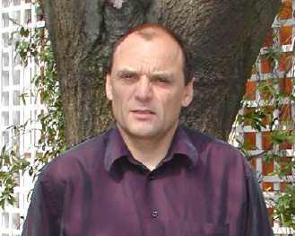
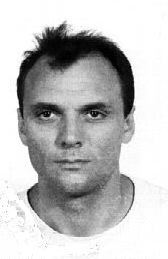

CURRICULUM VITAE
Name COQUEREAUX 
First name Robert
Born 11 Juin 1953 In Bourges (France)
Citizenship French
Marital status married, 3 children
Personal address La Largade A3, Super-Valmont, 13009, Marseille. France
Position Directeur de Recherches au CNRS
Professional adress Centre de Physique Théorique. CNRS. Case 907. Luminy.13288. Marseille.
Tel. (home) (33) (0)4 91 41 60 34
Tel.(office - CPT) (33) (0)4 91 26 95 18
e-mail coque@cpt.univ-mrs.fr
LONG TERM POSITIONS
2000-2005. Directeur du C.I.R.M. (Centre International de Rencontres Mathématiques, Marseille).
1992-now. Directeur de recherches au CNRS (CPT, Marseille).
1982-92. Chargé de recherches au CNRS (CPT, Marseille).
1978-81. Attaché de recherches au CNRS (CPT, Marseille).
1977-1978. Allocataire DGRST.
1973-77. Elève-Professeur à l' Ecole Normale Supérieure (St. Cloud).
GENERAL EDUCATION
- 1981. Doctorat d'état en Physique Théorique (CPT, Marseille)
"Schémas de renormalisation en théorie des champs".
- 1977. Doctorat de 3-ème cycle (PhD) en Physique Théorique (CPT, Marseille)
"Contribution à l'étude du comportement asymptotique des théories de jauge à grand moment de transfert".
- 1975. DEA de Physique Atomique et Statistique (Laboratoire de l école Normale Supérieure (Ulm)- Paris VI)
- 1974. Maîtrise de Physique (Université de Paris Sud, Orsay)
- 1973-77. Elève-Professeur à l école Normale Supérieure de St Cloud
- 1971-72. Classes de Mathématiques supérieures et Mathématiques spéciales au Lycée Saint-Louis, Paris
LONG TERM INVITATIONS (1 or two years)
- 1980. Situation post-doctorale à Harvard University (1 year).
- 1981-83. Membre de la Division Théorique du Centre Européen de Recherches Nucléaires (CERN fellowship), Genève (2 years).
- 1986-87. Professeur invité à l'I.H.E.S , Bures sur Yvette (1 year).
- 1987-88. Visiting Research Associate, Harvard University (1 year).
- 1990-91. Professeur invité à l'I.H.E.S , Bures sur Yvette (1 year).
- 1999-2000. Membre de la Division Théorique du Centre Européen de Recherches Nucléaires (Attaché Scientifique CERN), Genève.
TEACHING ACTIVITIES
Lectures given at Université d'Aix-Marseille:
Cours au niveau du Second Cycle (Maitrise de physique) -Master level-
1987. Cours de Physique Statistique (60 h) (Disponible sous forme dactylographiée).
Cours au niveau du Troisième Cycle (DEA): -PhD level-
1979. "Interactions faibles et particules élémentaires"
1983. "Théories de jauge"
1984. "Théories des groupes"
1984. "Algèbres de Clifford et spineurs, aspects algébriques"
1985. "Géométrie différentielle et Physique Théorique"
1989-2002 (every year). "Géométrie des Théories de Jauge et Gravitation"
Lectures given at C.N.A.M. (Conservatoire National des Arts et Métiers). Pays de Gex.
1992. "Cours de Mathématiques et Théorie du Signal (theory of distributions) " Series of lectures (80h).
Lectures given at the University of Zaragoza. Spain.
1996. "Non commutative geometry and theoretical physics" Series of lectures (PhD level, 10h).
Lectures given at C.B.P.F. (Centro Brasileiro de Pesquisas Fisicas) and U.E.R.J. (Univ. Estado Rio de Janeiro). Brasil.
1996. "Non commutative differential geometry" Series of lectures (PhD level, 12h).
1998. "Introduction to quantum groups and quantum spaces" Series of lectures (PhD level).
2002. Curso de Post Graduacao (IV Escola do CBPF, approx. 10 hr): "Relativistic cosmology".
Lectures given at the Instituto Balseiro (Centro Atomico de Bariloche). Argentina.
1996. "Geometria diferencial no comutativa" Series of lectures (PhD level, 12h).
Direction of PhD thesis
Subject : "Théories Quantiques de la Gravitation et Théories de Kaluza-Klein"
(G. Esposito - Farese, thesis defended in 1990)
Subject : "Interactions faibles, superalgèbres et Géométrie"
(Giuseppe Cammarata, thesis defended in 1998).
Subject : "Géométrie des variétés graduées"
(Trissevgenie Stavracou, thesis defended in 1997).
Subject : "Groupes quantiques de dimension finie et théories conformes"
(Gil Schieber, thesis defended in 2003).
Subject : "Groupoïdes quantiques : cellules et graphes"
(Esteban Isasi, thesis defended in 2006).
DIRECTION OF SCHOOLS AND CONFERENCES
First Caribbean Spring School of Mathematics and Theoretical Physics
Saint-François, Guadeloupe (31 mai - 13 juin 1993) 115 participants.
Direction and organisation of the school, (together with M. Dubois Violette).
Quantum symmetries in theoretical physics and mathematics
San Carlos de Bariloche, Argentina (January 10-24, 2000)
Direction and organisation of the school, (together with R. Trinchero).
ADMINISTRATIVE DUTIES
From 1992 to 1997, in charge of the group "Interactions Fondamentales"
within the CPT (Centre de Physique Theorique), Marseille.
From September 1st, 2000 to September 1st, 2005 : Director of CIRM (Centre International de Rencontres Mathématiques)
Luminy, Marseille.
Since 2006, in charge of the team "Géométrie, Physique et Symétries" within the CPT (Centre de Physique Theorique), Marseille.
PUBLICATIONS
- R. Coquereaux and E. de Rafael
Large transverse momentum properties of gauge theories,
Phys. Lett. Vol. 69B, Aout 77.
- R. Coquereaux and E. de Rafael
The electromagnetic form factors of the proton and quantum chromodynamics,
Phys. Lett. vol. 74B , Mar.78.
- R. Coquereaux and E. de Rafael
The ratio of the magnetic to the electric proton form factors and quantum chromodynamics,
Phys. Lett. 76B , 475 (1978).
- R. Coquereaux
Renormalization Schemes in QED,
Ann. of Phys. 125, 401 (1980).
- R. Coquereaux
Fermionic expansion in QED.
Phys. Rev. 23D, 2276 (1981).
- R. Coquereaux
Quark masses and renormalization schemes in QCD.
Phys. Rev. 23D, 1365 (1981).
- L. Baulieu and R. Coquereaux
Photon-Z mixing in the Weinberg-Salam model.
Ann. of Phys. 140, 163 (1982).
- R. Coquereaux and A. Grossmann
Analytic discussion of spatially closed Friedman universes with cosmological constant and radiation pressure.
Ann. of Phys. 143 , 296 (1982).
- R. Coquereaux
Modulo 8 periodicity of Clifford algebra and particle physics.
Phys. Lett. 115B, 389 (1982).
- R. Coquereaux
Aspects of multidimensional universes
in Proceedings of the "Annecy Meeting on Supersymmetry and Supergravity"
(ed. P.Sorba, R. Stora) - January 10-12, 1983 (LAPP-TH 73).
- R. Coquereaux
Comments about Riemannian geometry, Einstein Spaces,
Kaluza-Klein, 11 - dimensional supergravity and all that.
(Rapport interne). CERN TH 3639 (1983).
- R. Coquereaux
Aspects of the SU(2)xU(1) model
in "Topics on radiative corrections to the SU(2)xU(1) model"
(1983 Trieste Conference) - World Scientific Pub. Ed. B.W. Lynn, Y.F. Wheater.
- R. Coquereaux
Friedman universes and the cosmological constant
in "Formation and evolution of galaxies and large scale structures in the Universe".
NATO ASI Series -C117-Reidel. Ed. J. Audouze and J. Tran Thanh Van.
- R. Coquereaux and A. Jadczyk
Geometry of multidimensional universes
Commun. Math. Phys. 90 , 79-100 (1983).
- R. Coquereaux
Multidimensional Universes, Einstein spaces and symmetry breaking
Acta Physica Polonica, Vol. B15 (1984).
- R. Coquereaux
Internal Einstein spaces and Symmetry breaking
Phys. Lett. vol. 143B , p. 403 (1984).
- R. Coquereaux and A. Jadczyk
Symmetries of Einstein Yang-Mills Fields and Dimensional Reduction.
Communication Math. Phys. 98, 79-104 (1985).
- R. Coquereaux and A. Jadczyk
Harmonic expansion and dimensional reduction in G/H Kaluza Klein theories.
Classical and Quantum Gravity, 3 (1986) 29-42.
- R. Coquereaux, A. Grossmann and B. Lautrup
Iterative method for the evaluation of the elliptic P function of Weierstrass.
IMA Journal of Numerical Analysis (Oct.1989)
- R. Coquereaux
Differential characters : the Dirac monopole as an example.
Jour. Math. Phys. 26 (1985), 12.
- R. Coquereaux
Spinors, reflections and Clifford algebras : A review.
Austin preprint UTTG-21-85, published in: "Spinors in Physics and Geometry".
World Scientific, Ed. A.Trautman, G. Furlan. (1988).
- R. Coquereaux and A. Jadczyk
The consistency problem in Kaluza Klein theories.
Nucl. Physics. B276 (1986) 617-628
- R. Coquereaux
Condition de consistence des théories obtenues Réduction Dimensionelle et modèles G-invariants de type Kaluza-Klein.
Helvetica Physica Acta. N7, 1252 (1986)
- R. Coquereaux
Comments about the geometry of non-linear sigma models.
Int. Jour. of Modern Physics. Vol 2, No 6, p1763 (1987)
- R. Coquereaux and D. Kastler
Remarks on the differential envelopes of associative algebras.
Pacific Journal of Maths. Vol 137, N2, (1989)
- R. Coquereaux and G. Esposito-Farese
The theory of Kaluza-Klein-Jordan-Thiry revisited.
Ann. Inst. H. Poincaré. Vol 52, 113-150, 1989.
- R. Coquereaux and K. Pilch
String structures on loop bundles.
Communications in Mathematical Physics,120,357-378 (1989).
- R. Coquereaux
Non Commutative Geometry and Theoretical Physics.
Journal of Geometry and Physics. Vol 6, No1 (1989).
- R. Coquereaux, A. Jadczyk and D. Kastler
Differential and Integral Geometry of Grassmann Algebras.
Reviews in Mathematical Physics. Vol.3, No1 (1991) 63-99
- R. Coquereaux, G. Esposito-Farese
One loop divergences in Quantum Gravity: The Einstein-Maxwell-Kaluza-Klein system.
Classical and Quantum Gravity ,7, 1583-1597 (1990) .
- R. Coquereaux, L. Frappa, E. Ragoucy, P. Sorba
Extended Super Kac-Moody Agebras and their Super-Derivations Algebras.
Communications in Mathematical Physics, 133, 1-35 (1990).
- R. Coquereaux, A. Jadczyk
Conformal Theories, Curved Phase Spaces, Relativistic Wavelets and the Geometry of Complex Domains.
Reviews in Mathematical Physics, Vol 2 No 1 (1990) 1-44.
- R. Coquereaux, G. Esposito-Farese
Right Invariant metrics on the Lie group SU(3) and the Gell-Mann-Okubo formula for mesons.
Journal of Mathematical Physics, Vol 32 No4 (1991) 826-831
- R. Coquereaux
Lie Balls and Relativistic Quantum Fields.
Nucl Phys (Proc. Suppl.) 18B (1990) 48-52.
- R. Coquereaux, G. Esposito-Farese, G. Vaillant
Higgs Fields as Yang-Mills Fields and Discrete symmetries.
Nucl. Phys. B. 353(1991) N3
- R. Coquereaux
Higgs Fields and Superconnections.
Lecture Notes in Physics. Springer-Verlag. Vol 375. (1991)
Eds. C. Bartocci, U. Bruzzo, R. Cianci
- R. Coquereaux, R. Haußling, N.A. Papadopoulos, F. Scheck
Generalized gauge transformations and hidden symmetry.
Int. Jour. Modern Physics A7 (1992).2809
- R. Coquereaux, G. Esposito-Farese, F. Scheck
The theory of electroweak interactions and SU(2/1) algebraic superconnections
IHES-preprint, CPT-91/P.2464,
Int. Jour. of Modern Physics A, Vol 7, N 26 (1992)
- R. Coquereaux
Elementary Fermions and SU(2/1) Representations
Physics Letters B, Vol 261, N4, (1991)
- R. Coquereaux
Discrete Directions in the Standard Model.
In "Electroweak Interactions and Unified Theories".
NATO ASI Series -CXXX-Reidel. Ed. J. Tran Thanh Van.
- R. Coquereaux
Connections, metrics, symmetries and scalar fields in commutative and non commutative geometry.
Class. and Quantum Gravity, Vol 9, Suppl. 1992, S41
- R. Coquereaux
Yang Mills fields and Symmetry Breaking: From Lie Superalgebras to Non Commutative Geometry.
Proceedings of the first M. Born German-Polish symposium: "Quantum Groups and Related Topics", 115-127
1992 Kluver Acad. Pub. Ed. R. Gielerak et al.
- R. Coquereaux
"Super algebras, non commutative geometry and the standard model of electroweak interactions" In, "Dynamics of complex and Irregular systems"
Bielefeld 16-20/12/1991 Ed. Ph Blanchard. Word Scientific Pub.
- R. Coquereaux
Champs de Yang-Mills et brisures de symmétrie: super-algèbres et géométrie non commutative. CPT-91/PE.2689
Contribution Rencontre Strasbourg. RCP No25. IRMA, Vol 43. pp.67-80.
- R. Coquereaux
Non Commutative Geometry: A physicist's brief survey.
Proceedings of XXIIX Karpacz Winter School of Theoretical Physics: "Fields and Geometry"
J. of Geometry and Physics 11 (1993) 307-324
- R. Coquereaux, R. Haußling, F. Scheck
Algebraic connections on parallel universes
Int J. Mod. Phys. A, 1995, vol. 10, PP 89-98.
- R. Coquereaux, E. Ragoucy
Currents on Grassmann algebras
J. of Geometry and Physics, 1995, Vol 15, pp 333-352
- R. Coquereaux
Triangular dissections, aperiodic tilings and Jones algebras
Advances in Applied Mathematics, Vol 16, pp 402-424, 1995
- G. Cammarata, R. Coquereaux
Comments about Higgs fields, non commutative geometry and the Standard Model
Proceedings of the Schladming Winter School, 1995, Lecture Notes in Physics 469, Springer Verlag.
- R. Coquereaux
On the finite dimensional quantum group $M_3\oplus (M_{2/1}(\Lambda^2))_0$
CPT-96/P.3388, hep-th/9610114, Lett. in Math. Phys. 42:309-328, 1997
- R. Coquereaux
Differentials of higher order in non commutative geometry
CPT-96/P.3403, physics/9612015, Lett. in Math. Phys. 42:241-259, 1997
- R. Coquereaux
Finite Quantum Groups in Particle Physics ?
CPT-97/P.3555
Proceeding of the CERN-Santiago-La Plata meeting, (``Trends in Theoretical Physics'', April-May 97).
AIP Proceeding 419, Amer. Inst; of Phys., Eds. H.Falomir, R. Gamboa Saravi, F. Schaposnik.
- R. Coquereaux, A.O. Garcia and R. Trinchero
Geometry of the reduced quantum plane
Proceedings of the Palerme Conference on quantum groups (Nov. 97)
- R. Coquereaux, A.O. Garcia and R. Trinchero.
Finite dimensional quantum group covariant differential calculus on a complex matrix algebra
math.QA/9804021, CPT-98/P.3630, Phys Lett B 443,fasc. 1-4, pp.221-232, 1998
- R. Coquereaux, A.O. Garcia and R. Trinchero.
Differential calculus and connections on a quantum plane at a cubic root of unity
math-ph/9807012, CPT-98/P.3632. Rev. in Math. Phys. xxx
- R. Coquereaux, G. Schieber.
Action of a finite quantum group on the algebra of complex NxN matrices
math-ph/9807016, CPT-98/P.3668, ``Particles, Fields and Gravitation'', Lodz, Poland (1998), AIP Conference Proceedings 45
- R. Coquereaux, A.O. Garcia and R. Trinchero.
Associated quantum vector bundles and symplectic structure on a quantum plane
Proceedings of the 8th International Colloquium "Quantum Groups and Integrable
Systems", Prague, June 17-19, 1999
math-ph/9908007
- R. Coquereaux, A.O. Garcia and R. Trinchero.
Hopf stars, twisted Hopfs stars and scalar products on quantum spaces
math-ph/9904037, CPT-99/P.3808, J. of Geom. and Phys. 36 (2000) pp. 22-59
- R. Coquereaux, A. Grossmann.
Large scale geometry and evolution of a universe with radiation pressure and cosmological constant
astro-ph/0101369, CPT-2000/P.4109, CERN-TH/2000-180. Abbridged version published in portuguese :
"Evolução de um universo com presso de radiaçao e constante cosmológica". Anais: IV Escola do CBPF, Rio de Janeiro, 15 a 26 de julho de 2002, Ligia MCS Rodrigues et al, editores,
CBPF. Ao Livro Técnico, Rio de Janeiro (2003).
- R. Coquereaux
Notes on the quantum tetrahedron
math-ph/0011006, CPT-2000/P.4077, CERN-TH/2000-179.
Moscow Mathematical Journal. Vol 2, N1, January-March 2002, pp 41-80
- R. Coquereaux
Classical and quantum polyhedra: A fusion graph algebra point of view
New Developments in Fundamental Interaction Theories, AIP Conference Proceedings 589 ( 2001)
37th Karpacz Winter School of Theoretical Physics
J. Lukierski & J. Rembielinski eds, pp 181-203. hep-th/0105239
- R. Coquereaux and G. Schieber
Twisted partition functions for ADE boundary conformal field theories and Ocneanu algebras of quantum symmetries
hep-th/0107001
J. of Geometry and Physics, Volume 42, Issue 3, June 2002, Pages 216-258.
- R. Coquereaux
Quantum geometry of ADE diagrams and generalized Coxeter-Dynkin systems
Conference given at ICGTMP ("Group24") June 15-21, 2002, Paris.
ICGTMP 2002 proceedings.
-
R. Coquereaux and G. Schieber
Determination of quantum symmetries for higher ADE systems
from the modular T matrix
hep-th/0203242.
Journal of Mathematical Physics, vol 44, No 9, pp 3809-3837, sept 2003.
-
R. Coquereaux.
Quantum geometry of ADE diagrams and generalized Coxeter-Dynkin systems.
Proc. of the XXIV International
Colloquium on Group Theoretical Methods in Physics (Paris, July 15-20, 2002),
GROUP 24, Physical and Mathematical Aspects of Symmetries (2003), Eds
J.-P. Gazeau, R.Kerner, J.-P. Antoine, S. Métens,
J.-Y. Thibon,
-
R. Coquereaux and M. Huerta.
Torus structure and twisted partition functions for minimal and affine models.
hep-th/030121.
Journal of Geometry and Physics
Volume 48, Issue 4 , pp 580-634, (2003)
-
R. Coquereaux.
The $A_2$ Ocneanu quantum groupoid.
Algebraic Structures and Their Representations,
Proceedings of the XV Latinamerican Colloquium of Algebra, (Cocoyoc, Mexico,
August 2003).Contemporary Mathematics No 376, AMS
-
R. Coquereaux and M. Huerta.
Coxeter and Dynkin diagrams and their associated twisted
partition functions for the Virasoro minimal models.
Czechoslovak Journal of Physics, Vol. 54, 1199-1207, No. 11 (2004)
-
R. Coquereaux and R. Trinchero.
On Quantum symmetries of ADE
graphs .
hep-th/0401140.
Advances in Theor. and Math. Phys., volume 8, issue 1, (2004)
-
R. Coquereaux .
Clifford algebras, spinors and fundamental interactions : Twenty Years After.
ICCA7 Proceedings. Toulouse (2005)
-
R. Coquereaux and E. Isasi.
On quantum symmetries of the non - ADE graph F4 .
hep-th/040920.
Advances in Theor. and Math. Phys., volume 8, issue 6, (2005)
-
R. Coquereaux and A. Garcia .
On bialgebras associated with paths and essential paths on ADE graphs.
math-ph/0411048.
Intern. J. of Geom. Meth. in Mod. Phys., Vol 2, No 3, 1-26, (2005)
-
R. Coquereaux, D. Hammaoui, G. Schieber, E. H. Tahri .
Comments on the quantum symmetries of SU(3) graphs - July 2005. .
math-ph/0508002 - Jour. of Geom. and Phys. (2006).
-
R. Coquereaux .
Racah - Wigner quantum 6j Symbols, Ocneanu Cells for A_N diagrams, and quantum groupoids - Nov. 2005.
hep-th/0511293.
Journal of Geometry and Physics 57, 2 (2007)
-
R. Coquereaux and G. Schieber .
Quantum symmetries of SL2 and SL3 graphs.
Fifth International Conference on Mathematical Methods in Physics (Rio de Janeiro).
Proceedings of Science. PoS (IC2006) 001 (2006).
-
R. Coquereaux and G. Schieber .
Orders and dimensions for sl2 and sl3 module categories
and boundary conformal field theories on a torus.
math-ph/0610073.
J. of Mathematical Physics, 48, 043511 (2007)
-
R. Coquereaux et G. Schieber.
From conformal embeddings to quantum symmetries: an exceptional SU(4) example -
arXiv:0710.1397v1 [math-ph] 7 Oct 2007.
Journal of Physics-Conference Series Volume 103, 012006, 2008
- R. Coquereaux.
Clifford Algebras, Spinors and Fundamental Interactions: Twenty Years After.
Advances in Applied Clifford Algebras.
Volume 19, Numbers 3-4, 673-686, DOI: 10.1007/s00006-009-0184-1
- R. Coquereaux.
Conformal embeddings and quantum graphs with self-fusion. hal-00286087.
Proceedings of the XVII Coloquio Latino Americano de Algebra, Medellin, Colombia, July 2007.
Sao Paulo Journal of Mathematical Sciences 3, 1, 239262, (2009)
- R. Coquereaux et G. Schieber.
Quantum symmetries for exceptional SU(4) modular invariants associated with conformal embeddings
arXiv:0805.4678. Symmetry, Integrability and Geometry: Methods and Applications SIGMA 5, 044, (2009)
- R. Coquereaux, E.H. Tahri, R. Rais.
Exceptional quantum subgroups for the rank two Lie algebras B2 and G2.
arXiv:1001.5416. J. of Math. Phys., Vol.51, 9 (2010)
- R. Coquereaux.
Global dimensions for Lie groups at level k and their conformally exceptional quantum subgroups, arXiv:1003.2589.
Coloquio de Algebras de Hopf, Grupos Cuanticos y Categorias Tensoriales, Cordoba, Argentina, 2009.
Revista de la Union Matematica Argentina, Vol 51, No2, (2010)
- R. Coquereaux, E. Isasi, G. Schieber.
Notes on TQFT wire models and coherence equations for SU(3) triangular cells, arXiv:1007.0721.
Symmetry, Integrability and Geometry: Methods and Applications, SIGMA 6, 099, (2010).
- R. Coquereaux, J.-B. Zuber.
On sums of tensor and fusion multiplicities, 28pp, arXiv:1103.2943.
2011 J. Phys. A: Math. Theor. 44 295208.
http://iopscience.iop.org/collections?collection_type=SELECT
BOOKS
R. Coquereaux and A. Jadczyk
"Riemannian geometry, fiber bundles, Kaluza-Klein theories and all that".
World Scientific Lecture Notes in Physics, Vol 16. (345 pages). March 1988.
R. Coquereaux, M. Dubois-Violette and P. Flad (Editors)
"Infinite dimensional geometry, Non Commutative Geometry, Operator Algebras and Fundamental Interactions"
Proceedings of the First Carribean Spring School of Mathematics and Theoretical Physics.
(390 pages). World Scientific. October 95.
R. Coquereaux, A. Garcia and R. Trinchero (Editors)
"Quantum symmetries in theoretical physics and mathematics"
Proceedings of the Bariloche 2000 School of Mathematics and Theoretical Physics.
Collection Contemporary Mathematics. No 294. AMS Pub. 2002.
HYPERTEXT BOOKS
R. Coquereaux
"Espaces Fibrés et connexions ".
First version 1997. Second version 1998. Third version 2002.
230 pages in hypertext (html) available on line on the web.
http://www.cpt.univ-mrs.fr/~coque/link-to-book.html